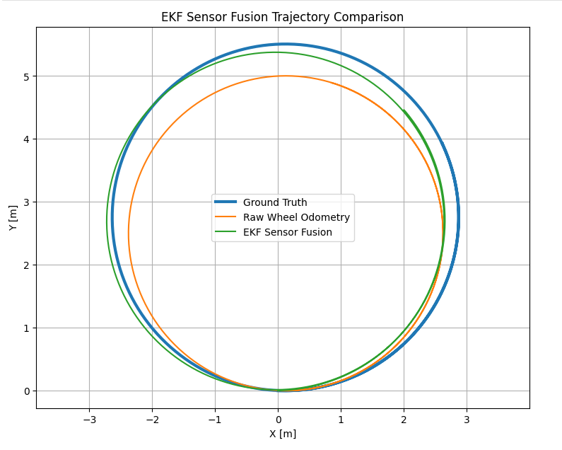
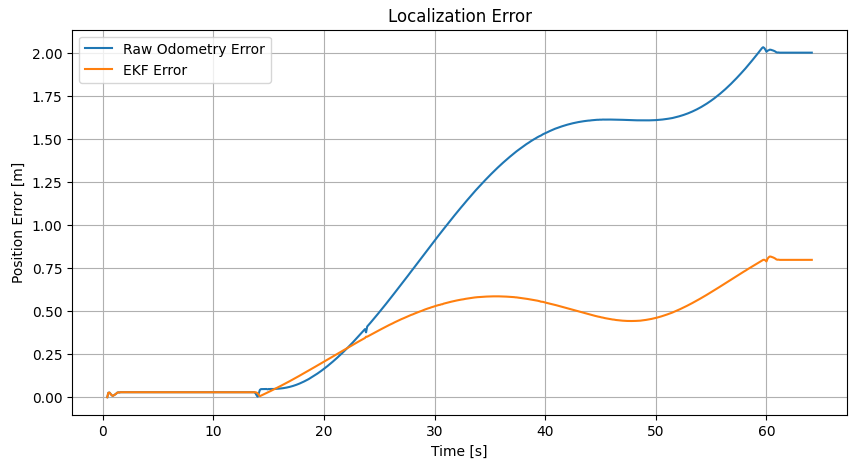

Robotics Portfolio Project 01
EKF Sensor Fusion for Mobile Robot Localization
A ROS 2 Humble implementation of an Extended Kalman Filter (EKF) that fuses wheel odometry and IMU yaw-rate measurements, with quantitative evaluation against independent Gazebo ground truth.
Demo
1. Project Objective
The goal of this project was to implement and evaluate a custom EKF for planar mobile-robot state estimation. Wheel odometry supplies forward velocity, the IMU supplies yaw rate, and Gazebo ground truth is used only for evaluation. The project intentionally separates estimation from evaluation so that the effect of sensor fusion can be measured quantitatively rather than judged only by visual trajectory overlap.
2. Why an EKF?
A differential-drive mobile robot is naturally described by a nonlinear
kinematic model. Even when the commanded or measured linear velocity is simple,
the mapping from heading and speed to Cartesian motion contains
cos(ψ) and sin(ψ). A standard linear Kalman Filter
assumes a linear state-transition model, so it is not directly suitable for
this motion model without changing the model itself.
The EKF was selected because it provides a practical compromise between model fidelity, computational cost, transparency, and implementation complexity. It preserves the nonlinear robot motion model, but locally linearizes it at each time step so the Kalman covariance machinery can still be used. For this project, the state dimension is small, the dynamics are smooth, and the robot operates with short sampling intervals, making EKF linearization a reasonable engineering choice.
Filter Comparison
| Filter | Core Idea | Advantages | Limitations | Relevance to This Project |
|---|---|---|---|---|
| Linear Kalman Filter (KF) | Propagates a Gaussian state estimate through linear state and measurement models. | Very efficient; mathematically clean; optimal for linear systems with Gaussian noise under the standard assumptions. | Cannot directly represent the nonlinear differential-drive motion model because Cartesian motion depends on sin(ψ) and cos(ψ). |
Too restrictive unless the robot model is simplified or externally linearized. |
| Extended Kalman Filter (EKF) | Uses the nonlinear model directly, then approximates it locally with Jacobians. | Computationally efficient; widely used in robotics; easy to inspect; suitable for smooth, mildly nonlinear systems. | Accuracy depends on local linearization; large uncertainty or strongly nonlinear motion can make the approximation poor. | Selected. It matches the nonlinear mobile-robot kinematics while remaining lightweight and interpretable. |
| Unscented Kalman Filter (UKF) | Propagates a deterministic set of sigma points through the nonlinear model instead of computing Jacobians. | Captures nonlinear transformations more accurately than a first-order EKF in many cases; no analytical Jacobian required. | Higher computational cost; more tuning and implementation complexity; benefits may be small for a low-dimensional, smooth model. | A strong alternative if the model becomes more nonlinear or the state grows, but unnecessary for this first implementation. |
| Particle Filter (PF) | Represents the belief with many weighted samples rather than a single Gaussian distribution. | Can represent nonlinear, non-Gaussian, and multimodal uncertainty; useful for global localization and ambiguous observations. | Computationally expensive; sample count and resampling strategy matter; unnecessary when the belief is approximately unimodal and low dimensional. | Better suited to problems such as global localization than this compact velocity-fusion problem. |
3. System Architecture
Gazebo Physics
│
┌───────────────┴───────────────┐
│ │
Differential Drive IMU
│ │
Wheel Odometry Yaw Rate
│ │
└──────────────┬────────────────┘
│
▼
Extended Kalman Filter
│
▼
/odometry/filtered
Gazebo Ground Truth
│
▼
Ground Truth / Raw / EKF
│
▼
RMSE Evaluation
Architecture Components
angular_velocity.z as the yaw-rate measurement.
4. EKF State Model
The estimated state is:
| State | Meaning | Why It Is Included |
|---|---|---|
| px | Robot x-position in the planar world frame | Required to reconstruct the robot trajectory. |
| py | Robot y-position in the planar world frame | Required to reconstruct the robot trajectory. |
| ψ | Yaw / heading angle | Determines how forward velocity projects into x and y motion. |
| v | Forward linear velocity | Updated from wheel odometry and used in the motion prediction. |
| ω | Yaw angular velocity | Updated from the IMU and used to propagate heading. |
Nonlinear Motion Model
The first two equations are nonlinear because the next Cartesian position
depends on cos(ψ) and sin(ψ). The robot moves forward
in its own body direction, but that forward motion must be projected into the
world x-y frame according to the current heading.
Why the Nonlinear Model Can Be Linearized
The EKF does not assume that the full robot motion is globally linear. Instead, it assumes that over one sufficiently short sampling interval, the nonlinear function can be approximated near the current state estimate by its first-order Taylor expansion.
Here, F is the Jacobian matrix of the nonlinear transition function
with respect to the state. It describes how a small perturbation in each state
variable changes the predicted next state. For this model:
F = [ 1 0 -v sin(ψ)Δt cos(ψ)Δt 0 ] [ 0 1 v cos(ψ)Δt sin(ψ)Δt 0 ] [ 0 0 1 0 Δt ] [ 0 0 0 1 0 ] [ 0 0 0 0 1 ]
The EKF evaluates this Jacobian at the current estimated state during every prediction step. Because the sampling interval is short and the state normally changes only a limited amount between consecutive updates, this local first-order approximation is adequate for the current differential-drive experiment.
Measurement Updates
The project uses two direct scalar measurements:
Wheel odometry therefore corrects the v state, while the IMU
corrects ω. The corrected velocity states then influence future
pose predictions through the nonlinear motion model. The covariance update uses
the Joseph form to improve numerical stability and preserve a well-behaved
covariance matrix.
5. Validation Strategy
5.1 Synthetic Validation
A synthetic sensor generator was used first to verify the EKF prediction/update pipeline, ROS 2 communication, CSV logging, trajectory plotting, and evaluation workflow independently of Gazebo.
5.2 Gazebo Physics Validation
The final evaluation used a differential-drive robot in Gazebo.
Ground truth was obtained independently from Gazebo state access and published
on /ground_truth.
6. Experiment 1 — Ideal Gazebo Baseline
The first Gazebo experiment intentionally kept the simulated sensing and actuation close to ideal. This established a baseline before realistic imperfections were introduced.
| Estimator | Position RMSE |
|---|---|
| Raw Odometry | 0.0400 m |
| EKF | 0.1121 m |
7. Experiment 2 — Realistic Sensor / Actuator Model
The second experiment changed a small number of parameters to make the simulation more representative of a real mobile robot, while avoiding excessive artificial degradation of raw odometry. The same basic trajectory and evaluation method were retained so the effect of the changed assumptions could be compared directly.
What Changed from Experiment 1?
| Parameter | Experiment 1 — Ideal Baseline | Experiment 2 — Realistic Model | Effect / Reason |
|---|---|---|---|
| Odometry source | World | Encoder | Moves from near-ground-truth Gazebo world odometry to wheel-derived dead reckoning, allowing accumulated odometric error. |
| Maximum wheel acceleration | 5.0 m/s² | 1.0 m/s² | Introduces a more realistic acceleration-limited actuator response instead of near-instant wheel-speed changes. |
| IMU yaw-rate bias | 0 rad/s | 0.005 rad/s | Adds a small systematic angular-rate offset representative of sensor bias. |
| IMU yaw-rate noise σ | 0 rad/s | 0.008 rad/s | Adds stochastic angular-rate measurement noise. |
| Wheel odometry update rate | 50 Hz | 50 Hz | Held constant so the comparison isolates model/sensor changes rather than sampling-rate changes. |
| IMU update rate | 100 Hz | 100 Hz | Held constant between experiments. |
| Sensor latency | Disabled | Disabled | Held out because the evaluator does not yet perform exact timestamp synchronization. |
Latency was intentionally excluded because the current evaluator records the latest available messages rather than performing exact timestamp synchronization. Adding latency at this stage would mix estimator error with time-alignment error and make the RMSE comparison difficult to interpret.
8. Results
| Estimator | Position RMSE |
|---|---|
| Raw Wheel Odometry | 1.2074 m |
| EKF Sensor Fusion | 0.4652 m |


9. Interpretation
The comparison between the ideal and realistic cases is the main engineering result of the project. In the ideal case, raw odometry was already extremely accurate and therefore left little useful information for fusion to improve. In the realistic case, encoder-based dead reckoning and more realistic actuator/sensor behavior allowed odometric error to accumulate. The IMU provided an independent yaw-rate measurement, and the EKF combined the two sources according to their modeled uncertainty.
This demonstrates an important state-estimation principle: the value of sensor fusion depends on the error characteristics of the individual sensors. A filter should not be evaluated only by whether its final trajectory “looks better”; the sensor assumptions, noise models, and reference data must also be physically and statistically meaningful.
10. ROS 2 Interfaces
/cmd_vel /odom /imu /ground_truth /odometry/filtered
11. Project Structure
01_ekf_sensor_fusion/ ├── description/ │ └── ekf_robot.urdf.xacro ├── ekf_sensor_fusion/ │ ├── ekf_core.py │ ├── ekf_node.py │ ├── evaluation_node.py │ ├── gazebo_ground_truth_node.py │ └── synthetic_sensor_node.py ├── launch/ │ ├── gazebo_ekf.launch.py │ └── synthetic_ekf.launch.py ├── results/ ├── worlds/ │ └── ekf_test.world ├── package.xml ├── setup.cfg └── setup.py
12. Limitations and Next Steps
The current EKF does not use an absolute position measurement, so long-term position drift cannot be completely eliminated. Future extensions could incorporate LiDAR localization, visual odometry, GPS, or landmark observations.
Additional simulation realism could include wheel-radius mismatch, asymmetric wheel geometry, wheel slip, time-varying IMU bias, and synchronized sensor latency. A future evaluation should also use timestamp synchronization or interpolation before introducing explicit sensor delays.
13. Key Takeaway
Project by Sooyong Kim · ROS 2 Robotics Portfolio